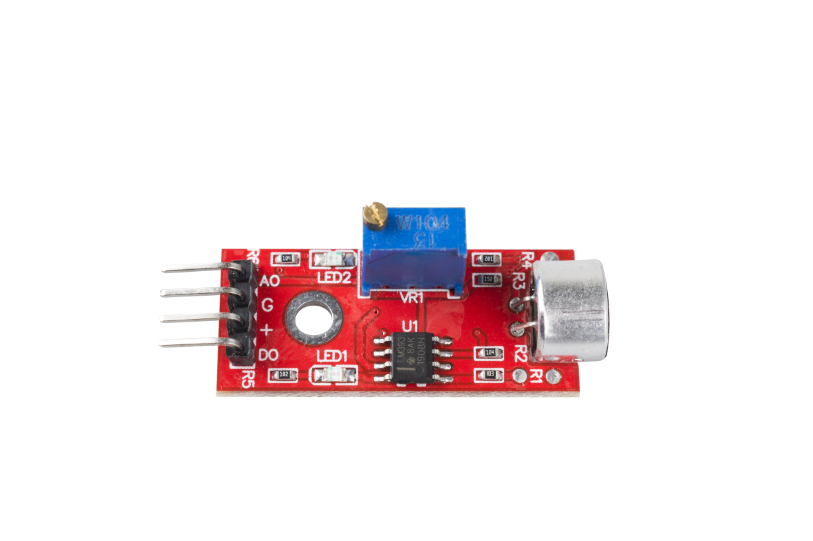

2.28 Schallsensormodul¶
Überblick¶
In diesem Lektioin lernen Sie den Umgang mit dem Schallsensormodul. Das Schallsensormodul bietet eine einfache Möglichkeit zur Schallerkennung und wird normalerweise zur Erkennung der Schallintensität verwendet.
Erforderliche Komponenten¶

Komponenteneinführung¶
{kind=link}
Dieses Modul kann für Sicherheits-, Switch- und Überwachungsanwendungen verwendet werden. Die Genauigkeit kann für die Benutzerfreundlichkeit leicht angepasst werden.
Es verwendet ein Mikrofon, das den Eingang zu einem Verstärker, einem Spitzendetektor und einem Puffer liefert. Wenn der Sensor Geräusche erkennt, verarbeitet er die Ausgangssignalspannung, sendet sie an den Mikrocontroller und führt dann die erforderliche Verarbeitung durch.
Dieses Modul hat zwei Ausgänge:
① AO: Analogausgang, Echtzeit-Ausgangsspannungssignal des Mikrofons.
② DO: Wenn die Intensität des Tons einen bestimmten Schwellenwert erreicht, ist der Ausgang ein Signal mit hohem oder niedrigem Pegel. Die Schwellenempfindlichkeit kann durch Einstellen des Potentiometers erreicht werden.
Fritzing Circuit¶
In diesem Beispiel können wir den Pin des Soundsensormoduls direkt mit dem Pin der Mega 2560-Platine verbinden, den Pin 「G」 des Soundsensormoduls mit GND, den Pin 「+」 mit 5 V, AO mit dem analogen Pin A0 und D0 an digitalen Pin 2.

Schematische Darstellung¶

Code¶
Nachdem Sie den Code auf die Mega2560-Karte hochgeladen haben, können Sie den seriellen Monitor öffnen, um den Lesewert des Pins anzuzeigen. Wenn der Umgebungsschall lauter wird, beträgt der digitale Messwert 「1」 (stellen Sie das Potentiometer des Moduls ein, um den Schwellenwert zu ändern und den hohen Pegel auszulösen), und der Lesewert des analogen Pins ändert sich erheblich. Wenn die Umgebung ruhig ist, ist der digitale Messwert 「0」 und der analoge Messwert ändert sich reibungslos.
Der Bereich des analogen Lesens beträgt 「0」 ~ 「1023」, aber abhängig von den Umgebungsbedingungen und den Eigenschaften des Schallsensors kann der tatsächliche Lesebereich kleiner sein als der theoretische. Wenn ein Oszilloskop verwendet wird, ist die Änderung des analogen Messwerts des Schallsensors offensichtlicher.
Informationen zur Erläuterung des Detailcodes finden Sie in Teil 1 -1.5 Analog Read und Teil 1- 1.4 Digital Read.
Phänomen Bild¶